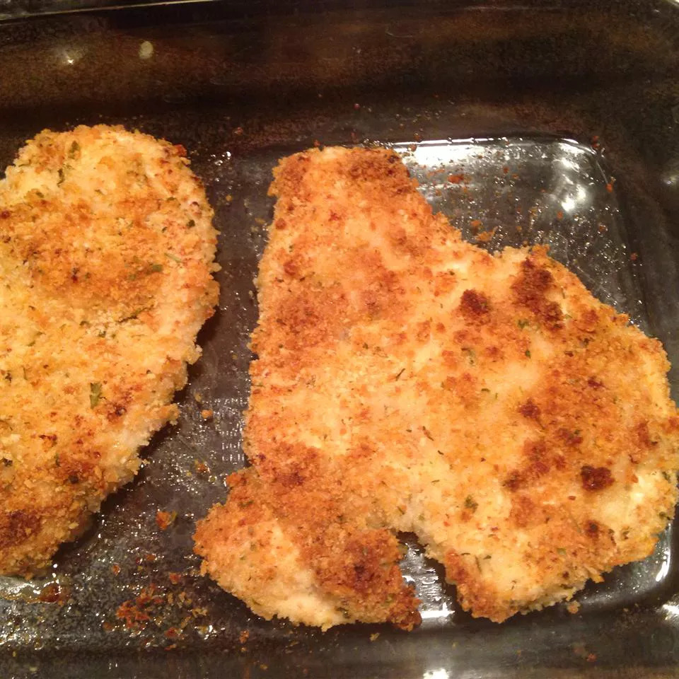

parmesan Crusted Chicken

Description
This Parmesan-crusted chicken with mayo is the simplest and most savory way to dress up chicken breasts for a quick supper. Just top them with mayonnaise, sprinkle with Parmesan cheese and bread crumbs, and bake. Dinner will be ready in 30 minutes or less!
- Prep time: 10 minutes
- Cook time: 20 minutes
- Total time: 30 minutes
- Servings: 4
Ingredients
- ½ cup Hellmann's® or Best Foods® Real Mayonnaise
- ¼ cup grated Parmesan cheese
- 4 (5 ounce) boneless, skinless chicken breast halves
- 4 teaspoons Italian seasoned dry bread crumbs
Directions
- Preheat the oven to 425 degrees F (220 degrees C).
- Mix mayonnaise and Parmesan cheese together in a medium bowl until well combined.
- Arrange chicken breasts on a baking sheet. Evenly top with mayonnaise mixture, then sprinkle with bread crumbs to coat.
- Bake in the preheated oven until golden on top and chicken is cooked through, about 20 minutes.